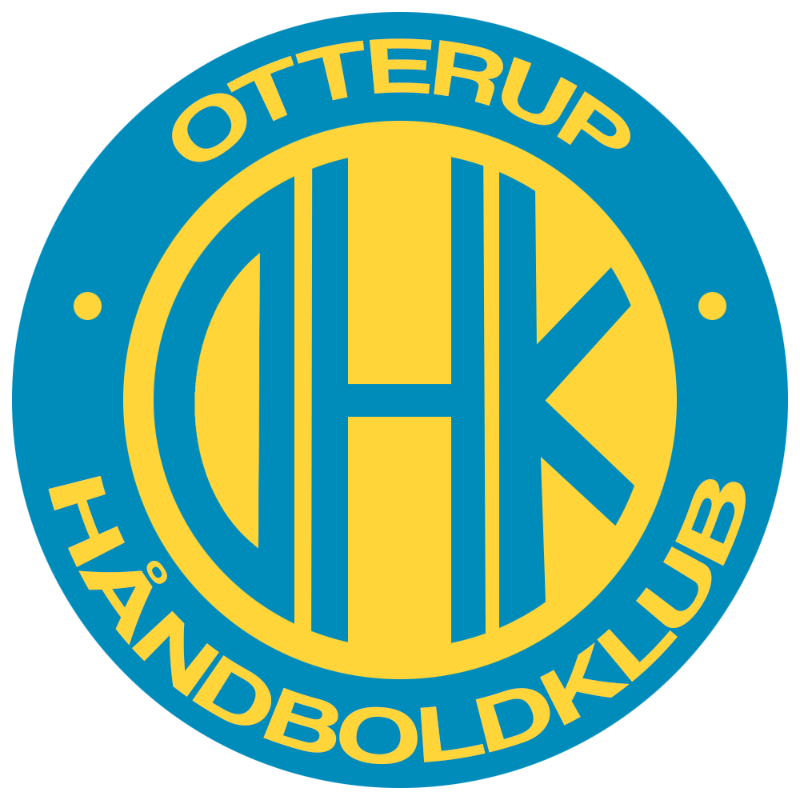

webdesign.
Webdesign er en forholdsvis ny ting, som jeg har kastet mig over. Men jeg dyrker det!
Der er ikke mange ting at vise frem endnu, men denne side vil helt klart få flere designs
med tiden.

re-design af hjemmeside.
I forbindelse med det første projekt på multimediedesigner-studiet,
skulle vi finde en hjemmeside, som havde brug for førstehjælp i form
af en nytænkning af webdesignet. Min gruppe og jeg faldt over OHK's (Otterup Håndboldklub)
hjemmeside, som - uden at såre nogen - virker lidt forældet. Her
kan du se deres nuværende hjemmeside, og her kan du se
vores prototype af et re-design af deres hjemmeside.